소방설비기사(기계분야) (2020-08-22 기출문제)
1과목: 소방원론
1. 화재의 종류에 따른 분류가 틀린 것은?
- A급 : 일반화재
- B급 : 유류화재
- C급 : 가스화재
- D급 : 금속화재
(정답률: 78%)

2. 다음 중 고체 가연물이 덩어리보다 가루일 때 연소되기 쉬운 이유로 가장 적합한 것은?
- 발열량이 작아지기 때문이다.
- 공기와 접촉면이 커지기 때문이다.
- 열전도율이 커지기 때문이다.
- 활성에너지가 커지기 때문이다.
(정답률: 79%)
3. 위험물과 위험물안전관리법령에서 정한 지정수량을 옳게 연결한 것은?
- 무기과산화물 – 300 kg
- 황화린 - 500 kg
- 황린 - 20 kg
- 질산에스테르류 - 200 kg
(정답률: 55%)
4. 다음 중 발화점이 가장 낮은 물질은?
- 휘발유
- 이황화탄소
- 적린
- 황린
(정답률: 45%)
5. 화재 시 발생하는 연소가스 중 인체에서 헤모글로빈과 결합하여 혈액의 산소운반을 저해하고 두통, 근육조절의 장애를 일으키는 것은?
- CO2
- CO
- HCN
- H2S
(정답률: 75%)
6. 다음 원소 중 전기 음성도가 가장 큰 것은?
- F
- Br
- Cl
- I
(정답률: 65%)
7. 탄화칼슘이 물과 반응 시 발생하는 가연성 가스는?
- 메탄
- 포스핀
- 아세틸렌
- 수소
(정답률: 67%)
8. 공기의 평균 분자량이 29일 때 이산화탄소 기체의 증기비중은 얼마인가?
- 1.44
- 1.52
- 2.88
- 3.24
(정답률: 71%)
9. 밀폐된 공간에 이산화탄소를 방사하여 산소의 체적 농도를 12% 되게 하려면 상대적으로 방사된 이산화탄소의 농도는 얼마가 되어야 하는가?
- 25.40%
- 28.70%
- 38.35%
- 42.86%
(정답률: 59%)
10. 화재하중의 단위로 옳은 것은?
- kg/m2
- ℃/m2
- kg·L/m3
- ℃·L/m3
(정답률: 70%)
11. 인화점이 20℃인 액체위험물을 보관하는 창고의 인화 위험성에 대한 설명 중 옳은 것은?
- 여름철에 창고 안이 더워질수록 인화의 위험성이 커진다.
- 겨울철에 창고 안이 추워질수록 인화의 위험성이 커진다.
- 20℃에서 가장 안전하고 20℃ 보다 높아지거나 낮아질수록 인화의 위험성이 커진다.
- 인화의 위험성은 계절의 온도와는 상관없다.
(정답률: 70%)
12. 소화약제인 IG-541의 성분이 아닌 것은?
- 질소
- 아르곤
- 헬륨
- 이산화탄소
(정답률: 59%)
13. 이산화탄소 소화약제 저장용기의 설치장소에 대한 설명 중 옳지 않는 것은?
- 반드시 방호구역 내의 장소에 설치한다.
- 온도의 변화가 적은 곳에 설치한다.
- 방화문으로 구획된 실에 설치한다.
- 해당 용기가 설치된 곳임을 표시하는 표지를 한다.
(정답률: 68%)
14. 화재의 소화원리에 따른 소화방법의 적용으로 틀린 것은?
- 냉각소화 : 스프링클러설비
- 질식소화 : 이산화탄소 소화설비
- 제거소화 : 포소화설비
- 억제소화 : 할로겐화합물 소화설비
(정답률: 74%)
15. 건축물의 내화구조에서 바닥의 경우에는 철근콘크리트의 두께가 몇 cm 이상이어야 하는가?
- 7
- 10
- 12
- 15
(정답률: 71%)
16. 소화효과를 고려하였을 경우 화재 시 사용할 수 있는 물질이 아닌 것은?
- 이산화탄소
- 아세틸렌
- Halon 1211
- Halon 1301
(정답률: 77%)
17. 질식소화 시 공기 중의 산소농도는 일반적으로 약 몇 vol% 이하로 하여야 하는가?
- 25
- 21
- 19
- 15
(정답률: 73%)
18. 제1종 분말소화약제의 주성분으로 옳은 것은?
- KHCO3
- NaHCO3
- NH4H2PO4
- Al2(SO4)3
(정답률: 67%)
19. Halon 1301의 분자식은?
- CH3Cl
- CH3Br
- CF3Cl
- CF3Br
(정답률: 70%)
20. 다음 중 연소와 가장 관련 있는 화학반응은?
- 중화반응
- 치환반응
- 환원반응
- 산화반응
(정답률: 74%)
2과목: 소방유체역학
21. 체적 0.1m3의 밀폐 용기 안에 기체상수가 0.4615 kJ/kg·K인 기체 1kg이 압력 2MPa, 온도 250℃ 상태로 들어있다. 이때 이 기체의 압축계수(또는 압축성인자)는?
- 0.578
- 0.828
- 1.21
- 1.73
(정답률: 45%)
22. 물의 체적탄성계수가 2.5 GPa 일 때 물의 체적을 1% 감소시키기 위해서 얼마의 압력(MPa)을 가하여야 하는가?
- 20
- 25
- 30
- 35
(정답률: 67%)
23. 안지름 40mm의 배관 속을 정상류의 물이 매분 150L로 흐를 때의 평균 유속(m/s)은?
- 0.99
- 1.99
- 2.45
- 3.01
(정답률: 63%)
24. 원심펌프를 이용하여 0.2m3/s로 저수지의 물을 2m 위의 물 탱크로 퍼 올리고자 한다. 펌프의 효율이 80%라고 하면 펌프에 공급해야 하는 동력(kW)은?
- 1.96
- 3.14
- 3.92
- 4.90
(정답률: 52%)
25. 원관에서 길이가 2배, 속도가 2배가 되면 손실수두는 원래의 몇 배가 되는가? (단, 두 경우 모두 완전발달 난류유동에 해당되며, 관 마찰계수는 일정하다.)
- 동일하다.
- 2배
- 4배
- 8배
(정답률: 55%)
26. 펌프가 운전 중에 한숨을 쉬는 것과 같은 상태가 되어 펌프 입구의 진공계 및 출구의 압력계 지침이 흔들리고 송출유량도 주기적으로 변화하는 이상 현상을 무엇이라고 하는가?
- 공동현상(cavitation)
- 수격작용(water hammering)
- 맥동현상(surging)
- 언밸런스(unbalance)
(정답률: 67%)
27. 터보팬을 6000rpm으로 회전시킬 경우, 풍량은 0.5m3/min, 축동력은 0.049 kW이었다. 만약 터보팬의 회전수를 8000rpm 으로 바꾸어 회전시킬 경우 축동력(kW)은?
- 0.0207
- 0.207
- 0.116
- 1.161
(정답률: 50%)
28. 어떤 기체를 20℃에서 등온 압축하여 절대압력이 0.2MPa에서 1MPa으로 변할 때 체적은 초기 체적과 비교하여 어떻게 변화하는가?
- 5배로 증가한다.
- 10배로 증가한다.
- 1/5 로 감소한다.
- 1/10 로 감소한다.
(정답률: 60%)
29. 원관 속의 흐름에서 관의 직경, 유체의 속도, 유체의 밀도, 유체의 점성계수가 각각 D, V, ρ, μ로 표시될 때 층류 흐름의 마찰계수(f)는 어떻게 표현될 수 있는가?
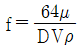
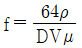
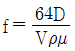
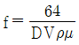
(정답률: 62%)
30. 그림과 같이 매우 큰 탱크에 연결된 길이 100m, 안지름 20cm인 원관에 부차적 손실계수가 5이 밸브 A가 부착되어 있다. 관 입구에서의 부차적 손실계수가 0.5, 관마찰계수는 0.02이고, 평균속도가 2m/s 일 때 물의 높이 H(m)는?
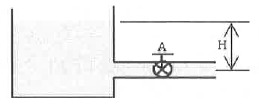
- 1.48
- 2.14
- 2.81
- 3.36
(정답률: 24%)
31. 마그네슘은 절대온도 293K에서 열전도도가 156 W/m·K, 밀도는 1740 kg/m3이고, 비열이 1017 J/kg·K 일 때 열확산계수(m2/s)는?
- 8.96×10-2
- 1.53×10-1
- 8.81×10-5
- 8.81×10-4
(정답률: 46%)
32. 그림과 같이 반지름이 1m, 폭(y 방향) 2m인 곡면 AB에 작용하는 물에 의한 힘의 수직성분(z방향) Fz와 수평성분(x방향) Fx와의 비(Fz/Fx)는 얼마인가?
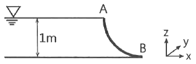
- π/2
- 2/π
- 2π
- 1/2π
(정답률: 43%)
33. 대기압하에서 10℃의 물 2kg이 전부 증발하여 100℃의 수증기로 되는 동안 흡수되는 열량(kJ)은 얼마인가? (단, 물의 비열은 4.2 kJ/kg·K, 기화열은 2250 kJ/kg 이다.)
- 756
- 2638
- 5256
- 5360
(정답률: 48%)
34. 경사진 관로의 유체흐름에서 수력기울기선의 위치로 옳은 것은?
- 언제나 에너지선보다 위에 있다.
- 에너지선보다 속도수두만큼 아래에 있다.
- 항상 수평이 된다.
- 개수로의 수면보다 속도수두 만큼 위에 있다.
(정답률: 65%)
35. 그림과 같이 폭(b)이 1m이고 깊이(h0) 1m로 물이 들어있는 수조가 트럭 위에 실려 있다. 이 트럭이 7m/s2의 가속도로 달릴 때 물의 최대 높이(h2)와 최소 높이(h1)는 각각 몇 m 인가?
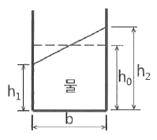
- h1 = 0.643 m, h2 = 1.413 m
- h1 = 0.643 m, h2 = 1.357 m
- h1 = 0.676 m, h2 = 1.413 m
- h1 = 0.676 m, h2 = 1.357 m
(정답률: 42%)
36. 유체의 거동을 해석하는데 있어서 비점성 유체에 대한 설명으로 옳은 것은?
- 실제 유체를 말한다.
- 전단응력이 존재하는 유체를 말한다.
- 유체 유동 시 마찰저항이 속도 기울기에 비례하는 유체이다.
- 유체 유동 시 마찰저항을 무시한 유체를 말한다.
(정답률: 61%)
37. 출구단면적이 0.0004m2 인 소방호스로부터 25m/s 의 속도로 수평으로 분출되는 물제트가 수직으로 세워진 평판과 충돌한다. 평판을 고정시키기 위한 힘(F)은 몇 N 인가?
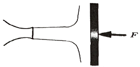
- 150
- 200
- 250
- 300
(정답률: 54%)
38. 두 개의 가벼운 공을 그림과 같이 실로 매달아 놓았다. 두 개의 공 사이로 공기를 불어 넣으면 공은 어떻게 되겠는가?
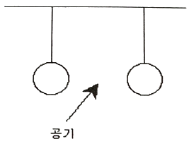
- 파스칼의 법칙에 따라 벌어진다.
- 파스칼의 법칙에 따라 가까워진다.
- 베르누이의 법칙에 따라 벌어진다.
- 베르누이의 법칙에 따라 가까워진다.
(정답률: 68%)
39. 다음 중 뉴튼(Newton)의 점성법칙을 이용하여 만든 회전 원통식 점도계는?
- 세이볼트(Saybolt) 점도계
- 오스왈트(Ostwald) 점도계
- 레으우드(Redwood) 점도계
- 맥미셸(MacMichael) 점도계
(정답률: 53%)
40. 그림과 같이 수은 마노미터를 이용하여 물의 유속을 측정하고자 한다. 마노미터에서 측정한 높이차(h)가 30mm일 때 오리피스 전후의 압력(kPa) 차이는? (단, 수은의 비중은 13.6 이다.)
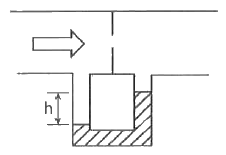
- 3.4
- 3.7
- 3.9
- 4.4
(정답률: 39%)
3과목: 소방관계법규
41. 다음 중 소방기본법령상 특수가연물에 해당하는 품명별 기준수량으로 틀린 것은?
- 사류 1000kg 이상
- 면화류 200kg 이상
- 나무껍질 및 대팻밥 400kg 이상
- 넝마 및 종이부스러기 500kg 이상
(정답률: 58%)
42. 다음 중 화재예방, 소방시설 설치·유지 및 안전관리에 관한 법령상 소방시설관리업을 등록할 수 있는 자는?
- 피성년후견인
- 소방시설관리업의 등록이 취소된 날부터 2년이 경과된 자
- 금고 이상의 형의 집행유예를 선고받고 그 유예기간 중에 있는 자
- 금고 이상의 실형을 선고받고 그 집행이 면제된 날부터 2년이 지나지 아니한 자
(정답률: 68%)
43. 위험물안전관리법령상 위험물취급소의 구분에 해당하지 않는 것은?
- 이송취급소
- 관리취급소
- 판매취급소
- 일반취급소
(정답률: 50%)
44. 국민의 안전의식과 화재에 대한 경각심을 높이고 안전문화를 정착시키기 위한 소방의 날은 몇 월 며칠인가?
- 1월 19일
- 10월 9일
- 11월 9일
- 12월 19일
(정답률: 68%)
45. 화재예방, 소방시설 설치·유지 및 안전관리에 관한 법령상 소방특별조사 결과 소방대상물의 위치 상황이 화재 예방을 위하여 보완될 필요가 있을 것으로 예상되는 때에 소방대상물의 개수·이전·제거, 그 밖의 필요한 조치를 관계인에게 명령할 수 있는 사람은?
- 소방서장
- 경찰청장
- 시·도지사
- 해당구청장
(정답률: 60%)
46. 화재예방, 소방시설 설치·유지 및 안전관리에 관한 법령상 지하가 중 터널로서 길이가 1천미터일 때 설치하지 않아도 되는 소방시설은?
- 인명구조기구
- 옥내소화전설비
- 연결송수관설비
- 무선통신보조설비
(정답률: 41%)
47. 위험물안전관리법령상 허가를 받지 아니하고 당해 제조소등을 설치하거나 그 위치·구조 또는 설비를 변경할 수 있으며, 신고를 하지 아니하고 위험물의 품명·수량 또는 지정수량의 배수를 변경할 수 있는 기준으로 옳은 것은?
- 축산용으로 필요한 건조시설을 위한 지정수량 40배 이하의 저장소
- 수산용으로 필요한 건조시설을 위한 지정수량 30배 이하의 저장소
- 농예용으로 필요한 난방시설을 위한 지정수량 40배 이하의 저장소
- 주택의 난방시설(공동주택의 중앙난방시설 제외)을 위한 저장소
(정답률: 58%)
48. 소방기본법령상 시장지역에서 화재로 오인할 만한 우려가 있는 불을 피우거나 연막소독을 하려는 자가 신고를 하지 아니하여 소방자동차를 출동하게 한 자에 대한 과태료 부과·징수권자는?
- 국무총리
- 시·도지사
- 행정안전부 장관
- 소방본부장 또는 소방서장
(정답률: 58%)
49. 소방시설공사업법령상 공사감리자 지정대상 특정소방대상물의 범위가 아닌 것은?
- 제연설비를 신설·개설하거나 제연구역을 증설할 때
- 연소방지설비를 신설·개설하거나 살수구역을 증설할 때
- 캐비닛형 간이스프링클러설비를 신설·개설하거나 방호·방수 구역을 증설할 때
- 물분무등소화설비(호스릴 방식의 소화설비 제외)를 신설·개설하거나 방호·방수 구역을 증설할 때
(정답률: 63%)
50. 소방기본법령상 소방대장의 권한이 아닌 것은?
- 화재 현장에 대통령령으로 정하는 사람외에는 그 구역에 출입하는 것을 제한할 수 있다.
- 화재 진압 등 소방활동을 위하여 필요할 때에는 소방용수 외에 댐·저수지 등의 물을 사용할 수 있다.
- 국민의 안전의식을 높이기 위하여 소방박물관 및 소방체험관을 설립하여 운영할 수 있다.
- 불이 번지는 것을 막기 위하여 필요할 때에는 불이 번질 우려가 있는 소방대상물 및 토지를 일시적으로 사용할 수 있다.
(정답률: 71%)
51. 화재예방, 소방시설 설치·유지 및 안전관리에 관한 법령상 스프링클러설비를 설치하여야 하는 특정소방대상물의 기준으로 틀린 것은? (단, 위험물 저장 및 처리 시설 중 가스시설 또는 지하구는 제외한다.)
- 복합건축물로서 연면적 3500m2 이상인 경우에는 모든 층
- 창고시설(물류터미널은 제외)로서 바닥면적 합계가 5000m2 이상인 경우에는 모든 층
- 숙박이 가능한 수련시설 용도로 사용되는 시설의 바닥면적의 합계가 600m2 이상인 것은 모든 층
- 판매시설, 운수시설 및 창고시설(물류터미널에 한정)로서 바닥면적의 합계가 5000m2 이상이거나 수용인원이 500명 이상인 경우에는 모든 층
(정답률: 50%)
52. 화재예방, 소방시설 설치·유지 및 안전관리에 관한 법령상 단독경보형 감지기를 설치하여야 하는 특정소방대상물의 기준으로 틀린 것은?(문제 오류로 가답안 발표시 1번으로 발표되었지만 확정답안 발표시 1, 3번이 정답처리 되었습니다. 여기서는 가답안인 1번을 누르시면 정답 처리 됩니다.)
- 연면적 600m2 미만의 기숙사
- 연면적 600m2 미만의 숙박시설
- 연면적 1000m2 미만의 아파트
- 교육연구시설 또는 수련시설 내에 있는 합숙소 또는 기숙사로서 연면적 2000m2 미만인 것
(정답률: 63%)
53. 소방시설공사업법령상 소방시설공사의 하자보수 보증기간이 3년이 아닌 것은?
- 자동소화장치
- 무선통신보조설비
- 자동화재탐지설비
- 간이스프링클러설비
(정답률: 59%)
54. 위험물안전관리법령상 제조소의 기준에 따라 건축물의 외벽 또는 이에 상당하는 공작물의 외측으로부터 제조소의 외벽 또는 이에 상당하는 공작물의 외측까지의 안전거리 기준으로 틀린 것은? (단, 제6류 위험물을 취급하는 제조소를 제외하고, 건축물에 불연재료로 된 방화상 유효한 담 또는 벽을 설치하지 않은 경우이다.)
- 의료법에 의한 종합병원에 있어서는 30m 이상
- 도시가스사업법에 의한 가스공급시설에 있어서는 20m 이상
- 사용전압 35000V를 초과하는 특고압가공전선에 있어서는 5m 이상
- 문화재보호법에 의한 유형문화재에 기념물 중 지정문화재에 있어서는 30m 이상
(정답률: 58%)
55. 소방기본법령상 화재가 발생하였을 때 화재의 원인 및 피해 등에 대한 조사를 하여야 하는 자는?
- 시·도지사 또는 소방본부장
- 소방청장·소방본부장 또는 소방서장
- 시·도지사·소방서장 또는 소방파출소장
- 행정안전부장관·소방본부장 또는 소방파출소장
(정답률: 66%)
56. 소방기본법령상 화재피해조사 중 재산피해조사의 조사범위에 해당하지 않는 것은?
- 소화활동 중 사용된 물로 인한 피해
- 열에 의한 탄화, 용융, 파손 등의 피해
- 소방활동 중 발생한 사망자 및 부상자
- 연기, 물품반출, 화재로 인한 폭발 등에 의한 피해
(정답률: 61%)
57. 위험물안전관리법령상 위험물시설의 설치 및 변경 등에 관한 기준 중 다음 ( ) 안에 들어갈 내용으로 옳은 것은?
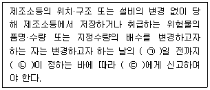
- ㉠ : 1, ㉡ : 대통령령, ㉢ : 소방본부장
- ㉠ : 1, ㉡ : 행정안전부령, ㉢ : 시·도지사
- ㉠ : 14, ㉡ : 대통령령, ㉢ : 소방서장
- ㉠ : 14, ㉡ : 행정안전부령, ㉢ : 시·도지사
(정답률: 53%)
58. 화재예방, 소방시설 설치·유지 및 안전관리에 관한 법령상 수용인원 산정 방법 중 침대가 없는 숙박시설로서 해당 특정소방대상물의 종사자의 수는 5명, 복도, 계단 및 화장실의 바닥면적을 제외한 바닥 면적이 158m2인 경우의 수용인원은 약 몇 명인가?
- 37
- 45
- 58
- 84
(정답률: 55%)
59. 화재예방, 소방시설 설치·유지 및 안전관리에 관한 법령상 1급 소방안전관리 대상물에 해당하는 건축물은?
- 지하구
- 층수가 15층인 공공업무시설
- 연면적 15000m2 이상인 동물원
- 층수가 20층이고, 지상으로부터 높이가 100미터인 아파트
(정답률: 45%)
60. 화재예방, 소방시설 설치·유지 및 안전관리에 관한 법령상 1년 이하의 징역 또는 1천만원 이하의 벌금 기준에 해당하는 경우는?
- 소방용품의 형식승인을 받지 아니하고 소방용품을 제조하거나 수입한 자
- 형식승인을 받은 소방용품에 대하여 제품검사를 받지 아니한 자
- 거짓이나 그 밖의 부정한 방법으로 제품검사 전문기관으로 지정을 받은 자
- 소방용품에 대하여 형상 등의 일부를 변경한 후 형식승인의 변경승인을 받지 아니한 자
(정답률: 36%)
4과목: 소방기계시설의 구조 및 원리
61. 다음 중 스프링클러설비에서 자동경보밸브에 리타딩 챔버(retarding chamber)를 설치하는 목적으로 가장 적절한 것은?
- 자동으로 배수하기 위하여
- 압력수의 압력을 조절하기 위하여
- 자동경보밸브의 오보를 방지하기 위하여
- 경보를 발하기까지 시간을 단축하기 위하여
(정답률: 70%)
62. 구조대의 형식승인 및 제품검사의 기술기준상 수직강하식 구조대의 구조 기준 중 틀린 것은?
- 구조대는 연속하여 강하할 수 있는 구조이어야 한다.
- 구조대는 안전하고 쉽게 사용할 수 있는 구조이어야 한다.
- 입구틀 및 취부틀의 입구는 지름 40cm 이하의 구체가 통과할 수 있는 것이어야 한다.
- 구조대의 포지는 외부포지와 내부포지로 구성하되, 외부포지와 내부포지의 사이에 충분한 공기층을 두어야 한다.
(정답률: 66%)
63. 분말소화설비의 화재안전기준상 분말소화설비의 가압용가스로 질소가스를 사용하는 경우 질소가는 소화약제 1kg마다 최소 몇 L 이상이어야 하는가? (단, 질소가스의 양은 35℃에서 1기압의 압력상태로 환산한 것이다.)
- 10
- 20
- 30
- 40
(정답률: 48%)
64. 도로터널의 화재안전기준상 옥내소화전설비 설치 기준 중 괄호 안에 알맞은 것은?
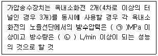
- ㉠ 0.1, ㉡ 130
- ㉠ 0.17, ㉡ 130
- ㉠ 0.25, ㉡ 350
- ㉠ 0.35, ㉡ 190
(정답률: 30%)
65. 물분무소화설비의 화재안전기준상 110kV 초과 154kV 이하의 고압 전기기기와 물분무헤드 사이의 이격거리는 최소 몇 cm 이상이어야 하는가?
- 110
- 150
- 180
- 210
(정답률: 66%)
66. 분말소화설비의 화재안전기준상 분말소화설비의 배관으로 동관을 사용하는 경우에는 최고사용압력의 최소 몇 배 이상의 압력에 견딜 수 있는 것을 사용하여야 하는가?
- 1
- 1.5
- 2
- 2.5
(정답률: 58%)
67. 소화기의 형식승인 및 제품검사의 기술기준상 A급 화재용 소화기의 능력단위 산정을 위한 소화능력시험의 내용으로 틀린 것은?
- 모형 배열 시 모형 간의 간격은 3m 이상으로 한다.
- 소화는 최초의 모형에 불을 붙인 다음 1분 후에 시작한다.
- 소화는 무풍상태(풍속 0.5m/s 이하)와 사용상태에서 실시한다.
- 소화약제의 방사가 완료된 때 잔염이 없어야 하며, 방사완료 후 2분 이내에 다시 불타지 아니한 경우 그 모형은 완전히 소화된 것으로 본다.
(정답률: 48%)
68. 상수도소화용수설비의 화재안전기준상 소화전은 특정소방대상물의 수평투영면의 각 부분으로부터 몇 m 이하가 되도록 설치하여야 하는가?
- 70
- 100
- 140
- 200
(정답률: 69%)
69. 연소방지설비의 화재안전기준상 배관의 설치기준 중 다음 괄호 안에 알맞은 것은?(관련 규정 개정전 문제로 여기서는 기존 정답인 1번을 누르면 정답 처리됩니다. 자세한 내용은 해설을 참고하세요.)
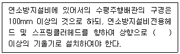
- 1/1000
- 2/100
- 1/100
- 1/500
(정답률: 57%)
70. 포소화설비의 화재안전기준상 포헤드의 설치 기준 중 다음 괄호 안에 알맞은 것은?
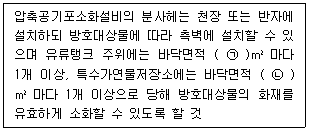
- ㉠ 8, ㉡ 9
- ㉠ 9, ㉡ 8
- ㉠ 9.3, ㉡ 13.9
- ㉠ 13.9, ㉡ 9.3
(정답률: 51%)
71. 제연설비의 화재안전기준상 배출구 설치 시 예상제연구역의 각 부분으로부터 하나의 배출구까지의 수평거리는 최대 몇 m 이내가 되어야 하는가?
- 5
- 10
- 15
- 20
(정답률: 51%)
72. 스프링클러설비의 화재안전기준상 스프링클러헤드를 설치하는 천장·반자·천장과 반자사이·덕트·선반 등의 각 부분으로부터 하나의 스프링클러헤드까지의 수평거리 기준으로 틀린 것은? (단, 성능이 별도로 인정된 스프링클러헤드를 수리계산에 따라 설치하는 경우는 제외한다.)
- 무대부에 있어서는 1.7m 이하
- 공동주택(아파트) 세대 내의 거실에 있어서는 3.2m 이하
- 특수가연물을 저장 또는 취급하는 장소에 있어서는 2.1m 이하
- 특수가연물을 저장 또는 취급하는 랙크식 창고의 경우에는 1.7m 이하
(정답률: 51%)
73. 이산화탄소소화설비의 화재안전기준상 전역방출방식의 이산화탄소소화설비의 분사헤드 방사압력은 저압식인 경우 최소 몇 MPa 이상이어야 하는가?
- 0.5
- 1.⑤
- 1.4
- 2.0
(정답률: 47%)
74. 완강기의 형식승인 및 제품검사의 기술기준상 완강기 및 간이완강기의 구성으로 적합한 것은?
- 속도조절기, 속도조절기의 연결부, 하부지지장치, 연결금속구, 벨트
- 속도조절기, 속도조절기의 연결부, 로우프, 연결금속구, 벨트
- 속도조절기, 가로봉 및 세로봉, 로우프, 연결금속구, 벨트
- 속도조절기, 가로봉 및 세로봉, 로우프, 하부지지장치, 벨트
(정답률: 57%)
75. 스프링클러설비의 화재안전기준상 스프링클러설비의 교차배관에서 분기되는 지점을 기점으로 한쪽 가지배관에 설치되는 헤드의 개수는 최대 몇 개 이하인가? (단, 방호구역 안에서 칸막이 등으로 구획하여 헤드를 증설하는 경우와 격자형 배관방식을 채택하는 경우는 제외한다.)
- 8
- 10
- 12
- 15
(정답률: 68%)
76. 제연설비의 화재안전기준상 제연설비의 설치장소 기준 중 하나의 제연구역의 면적은 최대 몇 m2 이내로 하여야 하는가?
- 700
- 1000
- 1300
- 1500
(정답률: 70%)
77. 옥내소화전설비의 화재안전기준상 배관의 설치기준 중 다음 괄호 안에 알맞은 것은?
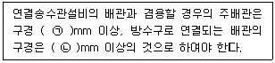
- ㉠ 80, ㉡ 65
- ㉠ 80, ㉡ 50
- ㉠ 100, ㉡ 65
- ㉠ 125, ㉡ 80
(정답률: 73%)
78. 이산화탄소소화설비의 화재안전기준상 저압식 이산화탄소 소화약제 저장용기에 설치하는 안전밸브의 작동압력은 내압시험압력의 몇 배에서 작동해야 하는가?
- 0.24 ~ 0.4
- 0.44 ~ 0.6
- 0.64 ~ 0.8
- 0.84 ~ 1
(정답률: 64%)
79. 소화기구 및 자동소화장치의 화재안전기준상 노유자시설은 당해용도의 바닥면적 얼마 마다 능력단위 1단위 이상의 소화기구를 비치해야 하는가?
- 바닥면적 30m2 마다
- 바닥면적 50m2 마다
- 바닥면적 100m2 마다
- 바닥면적 200m2 마다
(정답률: 47%)
80. 포소화설비의 화재안전기준상 전역방출방식 고발포용고정포방출구의 설치기준으로 옳은 것은? (단, 해당 방호구역에서 외부로 새는 양 이상의 포수용액을 유효하게 추가하여 방출하는 설비가 있는 경우는 제외한다.)
- 개구부에 자동폐쇄장치를 설치할 것
- 바닥면적 600m2 마다 1개 이상으로 할 것
- 방호대상물의 최고부분보다 낮은 위치에 설치할 것
- 특정소방대상물 및 포의 팽창비에 따른 종별에 관계없이 해당 방호구역의 관포체적 1m3에 대한 1분당 포수용액 방출량은 1L 이상으로 할 것
(정답률: 48%)